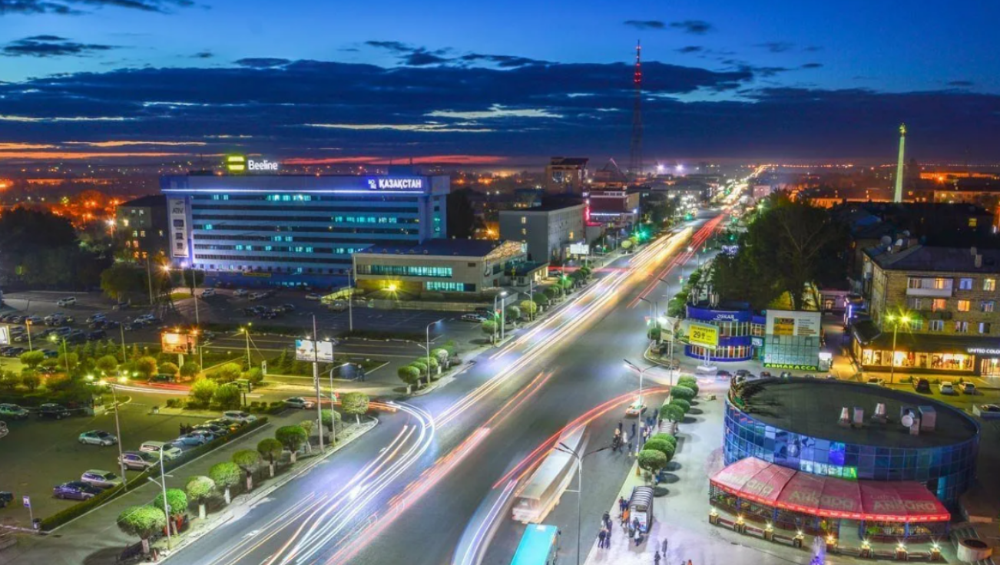

Центральный Казахстан
НазадКараганда — город в центральной части Казахстана, основанный в 1934 году как центр угольной промышленности. Город быстро развивался благодаря богатым месторождениям угля, став одним из ключевых промышленных центров страны. Караганда известна своей историей, связанной с трудом шахтёров и формированием рабочего класса. В городе находится множество памятников и музеев, отражающих его историческое наследие, включая мемориал "Бессмертный полк" и музей истории Караганды. Культурная жизнь города разнообразна: здесь активно развиваются театры, художественная галерея и музыкальные коллективы. Караганда также известна своими образовательными учреждениями, в том числе Карагандинским государственным университетом. Природа вокруг Караганды впечатляет, с живописными ландшафтами и заповедниками, такими как "Баянаул", что делает город привлекательным для туристов и любителей активного отдыха.
